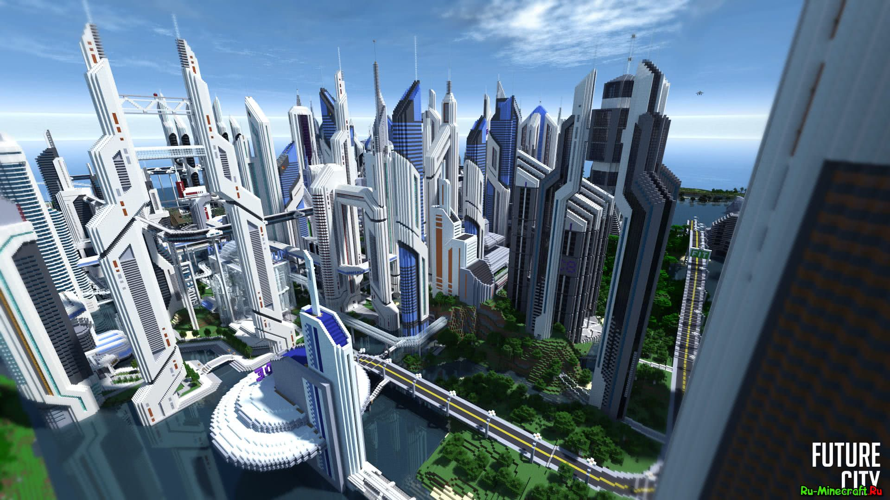

Наш ресурс направлен на то, чтобы снабжать людей, интересующихся архитектурой и строительством в майнкрафте, информацей по этой тематике и помогать развивать, дополнять и вносить свой вклад в мир.
Ведь мир - это майнкрафт, а мир майнкрафта велик и разнообразен. Его возможности безграничны. Здесь можно построить всё, чего только ни пожелает твоя фантазия. А мы расскажем тебе, как претворить мечты в реальность!
Наш ресурс познакомит Вас со всеми тонкостями строительного мастерства.
